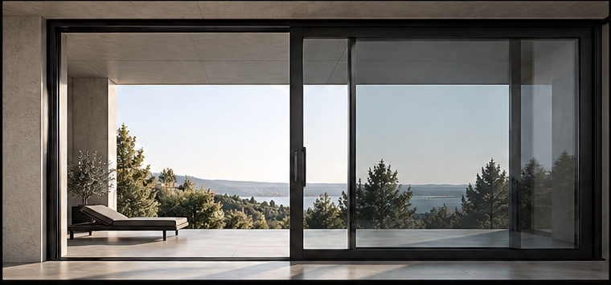
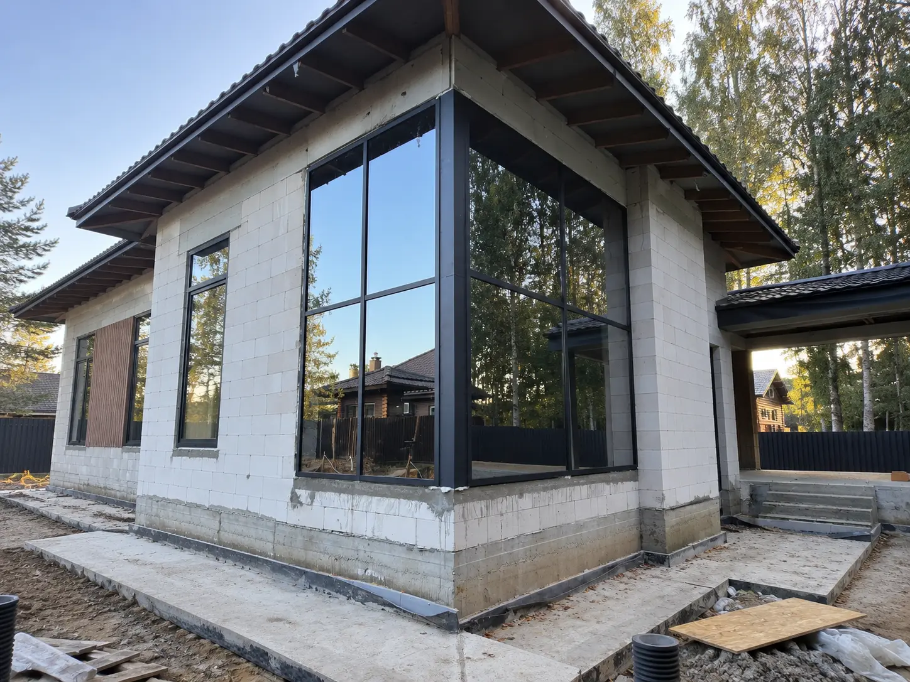

HS3 · ALUMARK S158
HS-портал3600 × 2300 мм · антрацит
489 000 ₽
В наличии
ХарактеристикиALUMARK S158 · 3 секц. · 3600 × 2300
СхемаСхема D1 · 2 активные + 1 фиксированная
Рама3-полозная · 246 мм
Створка70 мм
Заполнение10–50 мм
Стеклопакет44 мм · двухкамерный
ФурнитураRoto Patio Lift
АртикулSTD-HS3-S158-3600X2300-7016-D1
• Створка до 3000 мм по ширине• Створка до 3100 мм по высоте• Вес створки до 400 кг
ЦветАнтрацит · RAL 7016
СхемаСхема D1 · 2 активные + 1 фиксированная
Техническая схема
Схема D1 · 2 активные + 1 фиксированная
Canvas повторяет рабочую конфигурацию конкретного SKU.
ЗакрытоОткрыто
Секции3
СхемаD1
Размер3600 × 2300 мм
ФурнитураRoto Patio Lift

Комплектация
Что входит
Без повторения характеристик: только состав изделия и проектные материалы.
ALUMARK S158 + стеклопакетПрофиль, заполнение, уплотнения и заводская сборка
✓Roto Patio LiftКомплектация по конкретной схеме
✓Техническая спецификацияPDF · поле подготовлено
↓Монтажный узелPDF / DWG · поле подготовлено
↓